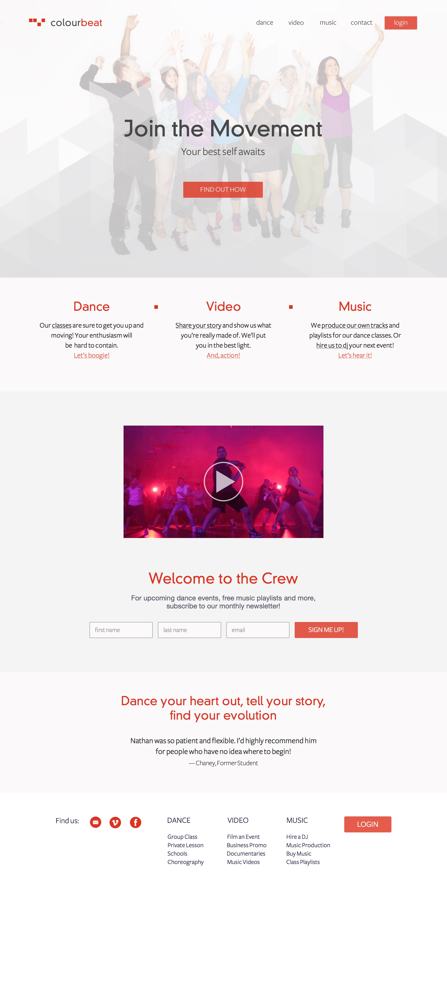
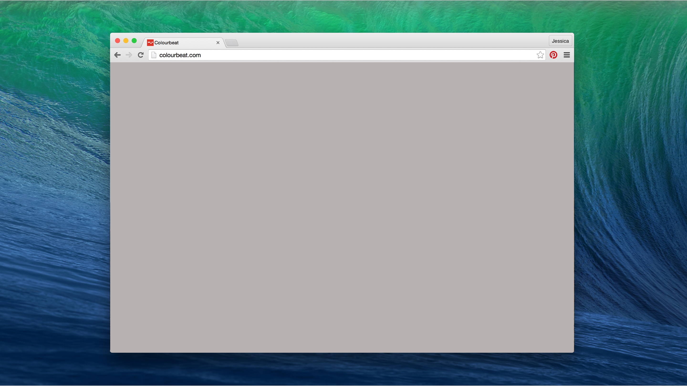
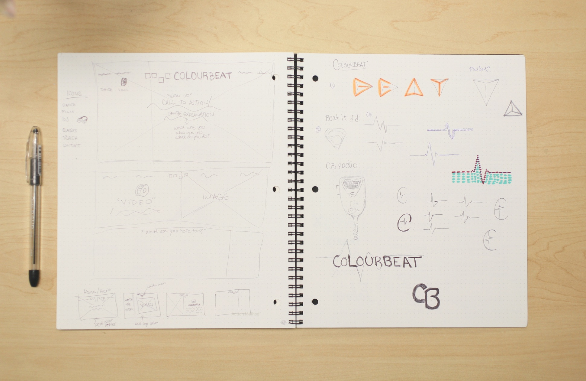
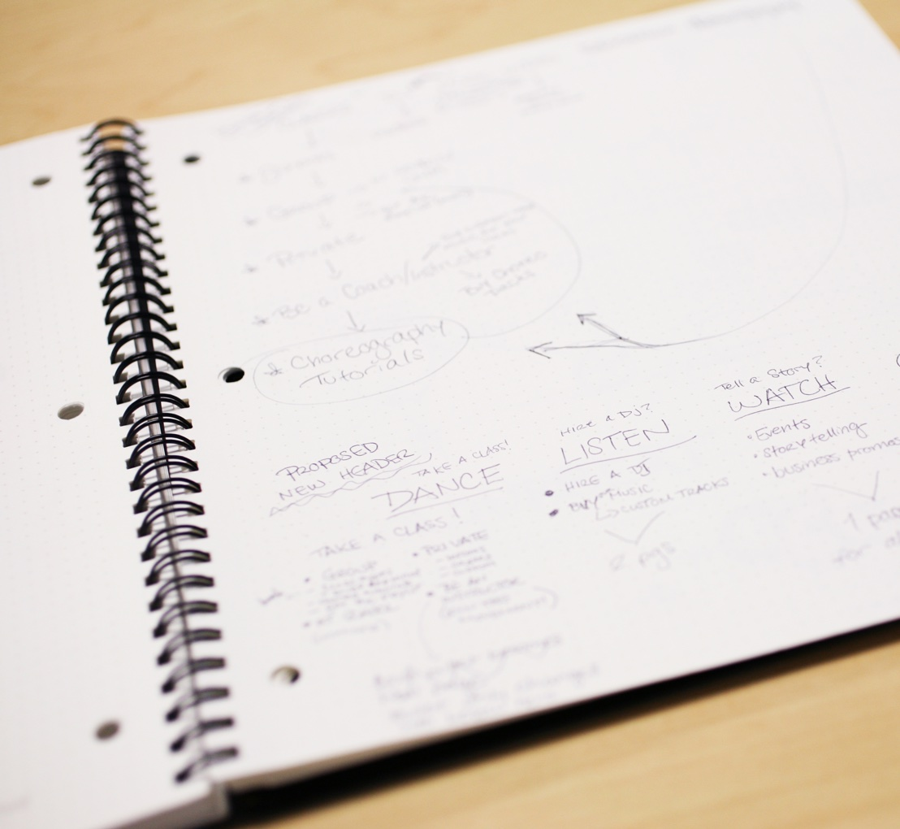
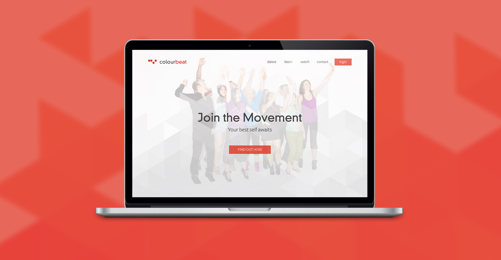

Colourbeat Web
As a part of the Colourbeat re-brand, I developed a mock up of a new site direction. I wanted to showcase the sense of community and inclusivity Colourbeat brings right from the getgo, to all aspects of their company. It was important to get their endgame across on the home page: achieving good health by sparking pure joy and utter enthusiasm. They strive to create a space to learn and try something new without fear of failure, and they will support every ounce of effort you bring.



01
Creating a prototype
The first priority for the landing was to narrow down the choices for the user. What started as over 10 header tabs was quickly cut in half as I sought to organize the essential directions a user would need to choose from.
The dance tab for example, includes several initially separate categories ranging from group classes, private lessons, primary school classes, choreography, and teacher training. All of these are highlighted and explained in more detail on the dance page.
Combining the tabs allowed for a clearer understanding of the distinct variety of services Colourbeat provides.

